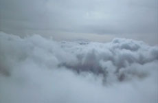
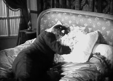

|
OLIVER PIETSCH
Because | D 2008 | 3’
"Because" nimmt die Betrachter mit auf einen traumartigen Flug durch Kumuluswolken mit gelegentlichen Szenen von herrlichen Sonnenauf- und untergängen. Der synchrone Soundtrack stammt aus dem Beatles-Song "Because", der wiederum eine umgeschriebene Arbeit von neun Harmonien ist, die nur von drei Sängern gesungen werden.
(Goff + Rosenthal Galerie, Berlin)
The Shape of Things | D 2008 | 17’
Die thematischen Sequenzen von "The Shape of Things" verwenden eine Vielfalt von Motiven und vermischen humorvolle und erotische Fantasien wie auch
friedlichen Schlummer mit lähmenden Phobien, privaten Ängsten und psychologischen Qualen.
(Goff + Rosenthal Galerie, Berlin)
Oliver Pietsch, geb. 1972 in München, lebt in Berlin. Studium an der Kunstakademie in München und Berlin.
Filme (Auswahl): Domin, Libra Nos 2006 (UNDERDOX 02) | Maybe Not 2005 (UNDERDOX 01) |The Conquest of Happiness 2005 | Drugged 2004 |
Tuned 2004 | Heaven Can Wait 2002 | Heroes 2001 | Bodysnatcher 2000
zurück
|